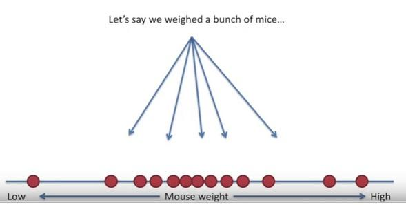

Probability vs Likelihood
To understand these concepts better, let's walk through one of the simplest random variable example: coin tossing
- If we flip a coin
100times and it comes up head53times then we could have a strong feeling that the coin is fair. - How would we feel about the fairness of the coin if we see
30heads70tails after100tosses? -
Can we trust the coin?
-
To answer this question, we need to ask another one: How much our sample support our hypothesis that
P(H)=P(T)=1/2? - Note that the direction of the question has reversed.
- (If our coin is fair then the probability that it will come up
headis0.5)
-
We know that it is also possible to see this outcome with a fair coin but the probabilty of this result is very low.
-
We can calculate the probability of
30heads70tails after100tosses with a fair coin by the formula below and a binom calculator

-
n: number of trials -
p: probability of success -
x: number of success out ofntrials

- Here we assumed that the coin was fair and
P(head)= 0.5 - The probability of observing
30and less number of heads with a fair coin is0.000039 - Regarding this probability now have a reasonable basis for the suspicion that the coin is not fair.
- In general, we calculate the probability of observing a particular set of outcomes by making suitable assumptions about the underlying process (e.g. probability of a coin landing heads is
pand that coin tosses areindependent).
- So we look for the probabilities when the parameters are known. In our example
p(head) = p(tail)= 1/2 - We can denote it more generally as:
- observed outcomes by
Oand - set of parameters that describe the distribution(stochastic process) as
θ
- observed outcomes by
- So, given specific values for
θ,P(O|θ)is the probability that we would observe the outcomes represented byO. - Here, we know that given a value of parameter
θthe probability of observing dataOisP(O|θ). - However, when we model a real life stochastic process, we often do not know
θ.
- Suppose somebody is trying to convince us to play a gambling game
- Before jumping in the gambling game, we can use the probabilities to compute properties like the expected gains and loses (mean, mode, median, variance, information ratio, value at risk etc)
-
Here, likelihood will help us to determine if we trust those probabilities.
-
We simply observe data and the goal is to arrive at an estimate for model parameters (in our coin toss example the probability of observing head or tail) that would be a plausible choice.
- Again, we are given a fixed data set(the measurement) and we are postulating the distribution that data set came from.
-
In other words, we find the parameter values
θthat maximize the probability that we would actually observe our dataO, maximize theL(θ|O)function -
L(θ|O)is called the likelihood function.
-
Notice that likelihood is a function of the unknown parameters
θof the distribution, given a sample from that distribution. -
Likelihood deals with fitting models given some known data
-
Likelihood is a measure calculated from a data sample to provide support for particular values of a parameter in a parametric model.
-
To have low values of likelihood means either we observe a rare data or an incorrect model!
- One could say that statistics comprises of two parts:
- Question of how to formulate and evaluate probabilistic models for the problem
- Question of obtaining answers after a certain model has been assumed
- Statistical questions can be converted to probability questions by the use of probability models.
- Once we make certain assumptions about the mechanism that generates the data, we can answer statistical questions using probability theory.
- However, the proper formulation and checking of these probability models is just as important, or even more important, than the subsequent analysis of the problem using these models.
- Probability quantifies anticipation of outcome from a know distribution,
- Likelihood quantifies trust in the model from which we assume the observed data is coming
- Likelihood is often used as an objective function, but also as a performance measure to compare two models
More formally¶
- A statistical model has to connect two distinct conceptual entities:
-
data, which are elements
xof some set (such as a vector space), and - model of the data behavior.
-
data, which are elements
-
The data
xare connected to the possible models with parameterθby means of a functionΛ(x,θ).- For any
given θ,Λ(x,θ)is intended to be the probability (or probability density) ofx. - For any
given x, on the other hand,Λ(x,θ)can be viewed as a function ofθ(likelihood) and is usually assumed to have certain properties, such as being continuous, second differentiable.
- For any
Visual explanation of likelihood¶
-
As an example, if we have some data from a normal distribution, but we don't know the mean and standard deviation of that normal distribution, we can use maximum likelihood to determine the optimal estimates for the mean and standard deviation.
-
The slides below were taken from the great Youtube channel StatQuest

The goal of maximum likelihood is to find the optimum way to fit a distribution to the data
The reasons we want to fit a distribution to our data:
- it can be easier to work with
- it is also more general (we can apply to every experiment of the same type)
- Once we decided on the distribution, it is time to figure out the center.
- Is one location is better than others as a center candidate?


Here the likelihood means trying to find the optimal value for the mean or the standard deviation for a distribution given a observed data.
How to calculate the likelihood of a normal distribution?¶
-
When we’re working with a discrete distribution, like the binomial distribution, then likelihood and probability are calculated the same way and we get the same value for both.
-
However, with a continuous distribution, like the normal distribution, then they are quite different.
-
If our function is continuous function thus a probability density function (PDF):
-
The likelihood for a single data point is the y-axis value that corresponds to that point.
-
The probability, however, is calculated as the integral between two points. So for a single data point, the probability is always
zero. -
If we have multiple measurements (data), the likelihood is the various y-axis values multiplied together.
-
Likelihood values can be greater than 1.
-
What is on the y-axis of a PDF?¶
-
For example, suppose the graph is the distribution of height of adult males in centimeters.
-
Then the y-axis units are
probability / centimeters. -
Then when you multiply a y-axis value (
p/cm) times an x-axis value (cm) to get an area (p), the units are probability. -
That unit doesn’t make a lot of sense at first
- We define the probability density function as the derivative of the cumulative distribution function—F(X).
- The cumulative distribution function is measured in units of probability, so it’s easy to describe, F(X) is the probability of a random observation being less than or equal to X.
- Say the value of
f(X)is0.01at175. - What does that mean?
-
It means that for a small range in centimeters around
175, say from174.9to175.1, the probability of a random adult male being found in the range is about0.01times the width of the range in centimeters, so0.01*(175.1 - 174.9) = 0.002 -
So we think about
0.2%of adult men will have a height in that range. -
If we measured in inches instead of centimeters, the value of f(X) would be
0.0254instead of0.01, because the new height units are2.54larger than the old height units. -
So the measured values are divided by 2.54, so f(X) which is measured in inverse unit will be 2.54 as large.
Comments